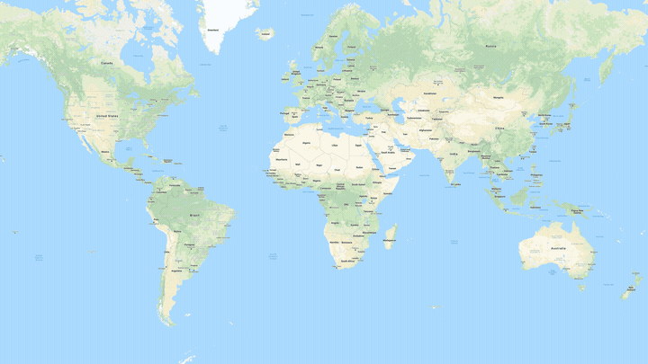

ELPTA's Purpose
 ELPTA stands for the Endangered Language Preservation and Transcription Association The purpose of this initiative is to not only bring awareness to the endangered languages that exist all around the world, but also encourage the community to take action by contributing to the transcription process and engage the online community to aid in the preservation of culture and tradition. Today we harness the power of modern technology and the internet to protect and remember these endangered languages.
The Transcription Process
Contribute to the transcription process by clicking the 'Transcribe' tab or one of the images below. When you get to this page, simply transcribe the given document on the left side of the screen into the blank box on the right. When finished, press submit and the documents will be sent to our team for review!
Importance
In the present circumstances where the internet can be used as such a powerful tool to inspire global connectednes, we can use this time to work together and preserve important facets of culture. With these resources now more visible and accesible, as a community we are able to prevent these traditions from becoming only a memory of the past.
One might wonder, well why transcribe? Transcription is important to make sure that the information on the documents is easy to read, access, use, and archive. This encourages people to keep referencing the language and help others learn about them.